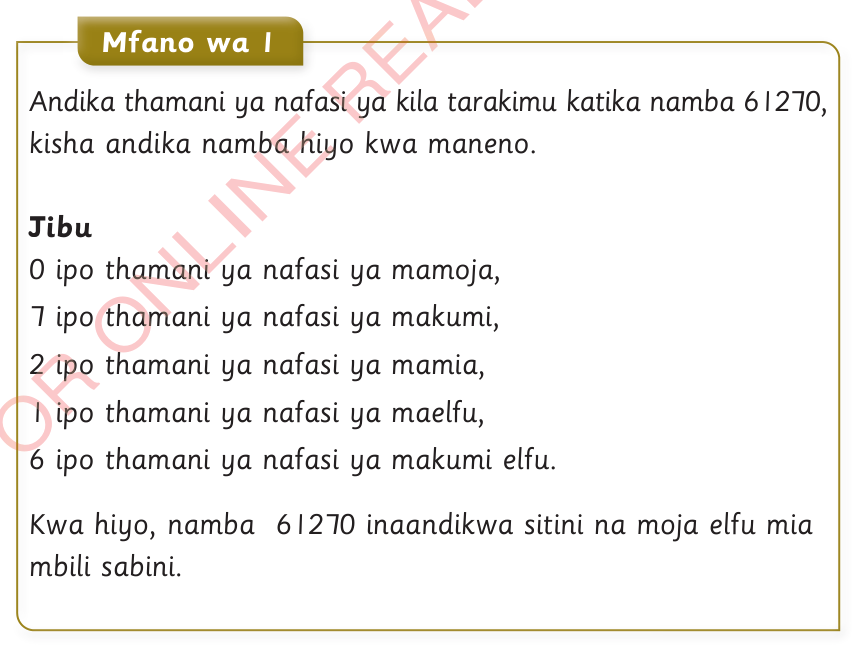

Kusoma na kuandika namba nzima zinazozidi 10000
Idadi ya vitu inayozidi 10000 inaweza kuhesabiwa kwa urahisi kwa kutumia mafungu. Vilevile, ili kusoma na kuandika namba nzima zinazozidi elfu kumi kwa urahisi anza kubaini thamani ya nafasi ya kila tarakimu katika namba nzima husika.

Mfano wa 1
Andika thamani ya nafasi ya kila tarakimu katika namba 61270, kisha andika namba hiyo kwa maneno.
Jibu
0 ipo thamani ya nafasi ya mamoja,
7 ipo thamani ya nafasi ya makumi,
2 ipo thamani ya nafasi ya mamia,
1 ipo thamani ya nafasi ya maelfu,
6 ipo thamani ya nafasi ya makumi elfu.
Kwa hiyo, namba 61270 inaandikwa sitini na moja elfu mia mbili sabini.